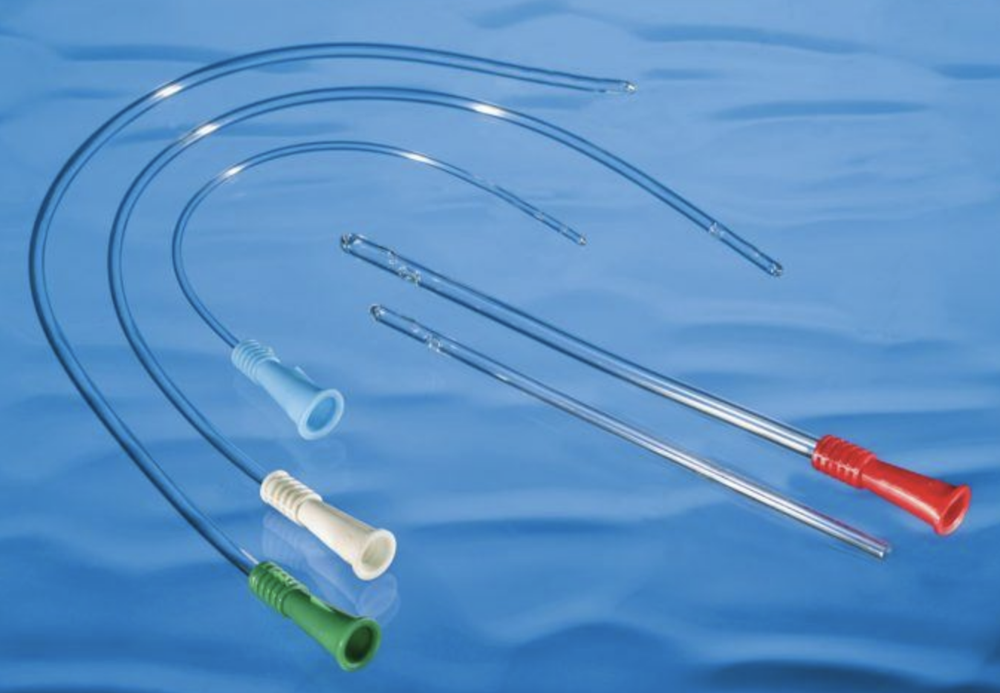

...
...
Urinary Catheterization- Return Demonstration
Urinary Catheterization
Urinary elimination is a basic human function that can be compromised by illness, surgery, and other conditions. Urinary catheterization may be used to support urinary elimination in patients who are unable to void naturally.
Urinary catheterization may be required:
1. In cases of acute urinary retention
2. When intake and output are being monitored
3. For preoperative management
4. To enhance healing in incontinent patients with open sacral and perineal wounds
5. For patients on prolonged bedrest
6. For patients needing end-of-life care


...
...